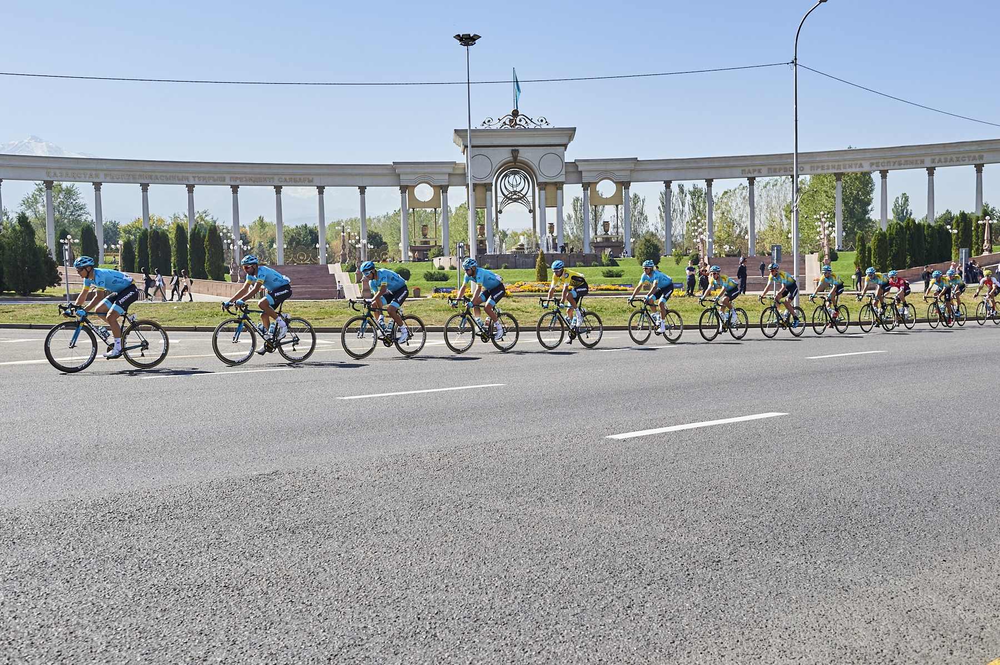

Профессиональная велокоманда «Астана» назвала состав на участие в предстоящем Tour of Almaty-2019. На старт гонки выйдут семь велогонщиков.
Так, стартовать будут Евгений Гидич, Юрий Натаров, Дмитрий Груздев, Артем Захаров, Даниил Фоминых, Жандос Бижигитов и Никита Стальнов.
Как отмечает спортивный директор «Астаны» и главный тренер сборной Казахстана по велоспорту на шоссе Асан Базаев, командный баланс «Астаны» поможет казахстанским гонщикам контролировать гонку.
«Выбор состава основывался на том, чтобы команду представляли наши казахстанские велогонщики. Каких-то серьёзных ротационных изменений мы не производили. В свою очередь наш лидер Алексей Луценко будет стартовать на других крупных рейтинговых стартах, сначала во Франции, а затем в Германии»,- озвучил Базаев.
Комментируя тактические и стратегические моменты, Базаев отметил, что во многом борьба «Астаны» будет корректироваться и основываться по итогам первого этапа. Тем не менее, команда готов к различным сценариям. При этом главной задачей перед велогонщиками стоит, конечно, победа.
Ярко-выраженного капитана в составе не будет. И многое в гонке будет зависеть от контроля.«Основной тактический рисунок будет определяться уже походу гонки. Исходя из того, какие события произойдут, мы сможем рассуждать в команде на тему того, как дальше вести борьбу. Первый день будет равнинный. И на нем будет многое зависеть от отрыва, а именно кто его составит. Безусловно, наша команда будет максимально контролировать ход «Тура Алматы». Однако в спорте часто случаются различные события. И нам следует быть готовыми ко многим сценариям.
Как я говорил, многое будет зависеть от первого этапа. Если финишировать будет группа, то на второй день нам следует раскатывать пелотон. Также отмечу, что сто процентного капитана в команде не будет. Однако большую часть данных функций будет выполнять наш Дмитрий Груздев, имеющий большой опыт. При этом вся команда у нас готова. У каждого есть свои преимущества. Фоминых, например, больше акцент сделает на равнинный этап. Натаров с Гидичем — горный. Баланс присутствует. Остается подстраиваться под развитие гонки, а также контролировать ее. Очень важно удерживать контроль.
Не исключаю такой момент, что в пелотоне будет универсал из другой команды, который выиграет на равнине более минуты. На второй день такой отрыв будет сложно отыграть, учитывая, что в горах он будет чувствовать себя комфортно.
Естественно, будем работать на победу. И основная задача — стать лучшими на домашней гонке. К тому же, на кону важные рейтинговые очки. Так что все постараемся»,- резюмировал Базаев.
Напомним, Tour of Almaty является одним из самых крупных и значимых международных спортивных соревнований на территории Казахстана. В этом сезоне гонка пройдет уже в седьмой раз. В ней примут участие свыше 150 велогонщиков из более чем 25 стран мира. Два этапа состоятся 30 и 31 августа.